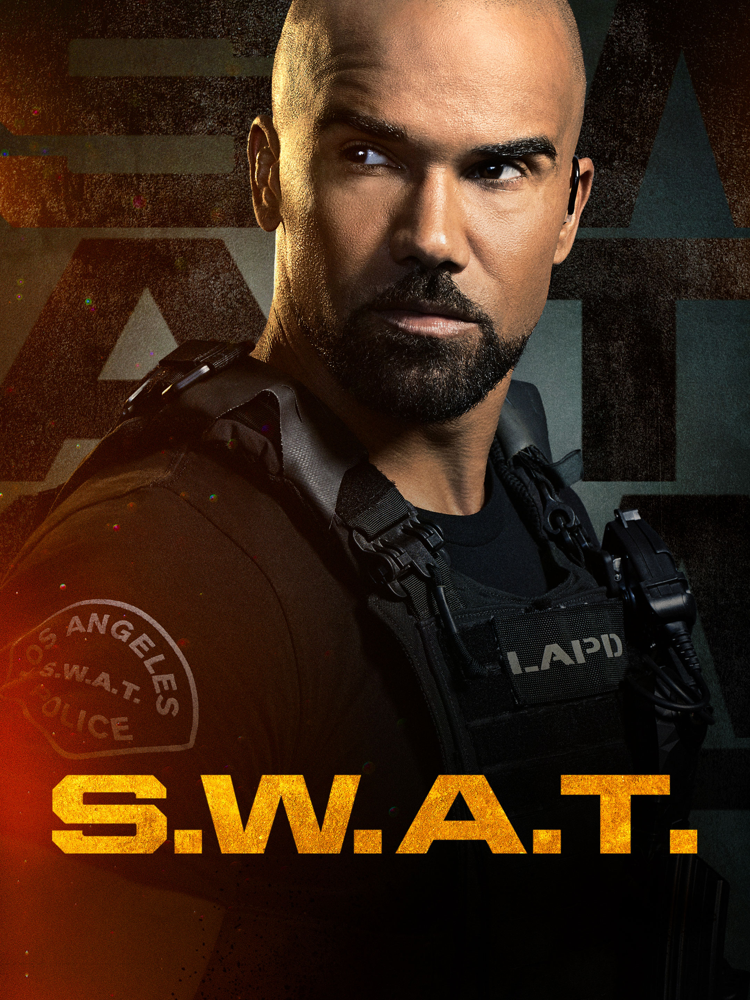

Sinopse
S.W.A.T. – Força de Intervenção acompanha Daniel Harrelson (Shemar Moore), um tenente do Esquadrão de Armas e Táticas Especiais que recebe o comando de uma unidade de párias grosseiros, mas muito bem treinados. A equipe de Hondo é chamada para resolver crimes de alta periculosidade sempre que as demais opções de ajuda já se esgotaram. Secretamente, o tenente se vê dividido entre ser leal à corporação ou, então, às ruas das quais veio.
Elenco
- Shemar Moore → Personagem: Daniel "Hondo" Harrelson
- Alex Russell → Personagem: Jim Street
- Lina Esco → Personagem: Christina "Chris" Alonso
- Kenny Johnson → Personagem: Dominique Luca
- David Lim → Personagem: Victor Tan
- Patrick St. Esprit → Personagem: Robert Hicks
- Jay Harrington → Personagem: David "Deacon" Kay